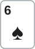
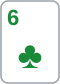

안녕하세요. 대회 중반, 스택 40BB 레벨이에요. 오늘은 BB에서 6♠6♣로 싸게 들어가 세 명이 플랍을 본 판이에요. 플랍에 6이 떨어져 Hero는 셋을 맞았어요.
그런데 보드가 9♥8♥6♦예요. 하트 두 장, 이어진 숫자 셋. 상대 두 명 중 누군가는 플러시나 스트레이트를 노리고 있을 수 있어요. 오늘은 강한 핸드를 멀티웨이에서 어떻게 지키는지, 그리고 그 판단이 상대 핸드 하나하나에 무엇을 뜻하는지 따라가요.
이 글에서 배울 것
- 앤티 팟 BB에서 작은 페어로 콜할 때 셋을 노리는 계산(I21)이 멀티웨이에서 어떻게 보이는지
- 드로우 많은 보드에서 셋이 이길 때와 질 때, 그리고 지는 상대가 남기는 아웃츠
- 셋으로 지금 크게 거는 이유: 접는 핸드의 에퀴티를 지우고, 드로우에게 다음 카드를 싸게 보여 주지 않기
오늘의 한 판
Hero (BB · 스택 40BB) · HJ (스택 40BB) · BTN (스택 40BB) · 블라인드 0.5/1, BB 앤티 1BB · 대회 중반


프리플랍
UTG·CO 폴드 → HJ 2.2BB 오픈 → BTN 콜 → SB 폴드 → Hero(BB)는 1.2BB를 더 내고 콜할까? Hero 콜. 팟은 HJ 2.2 + BTN 2.2 + Hero 2.2 + SB 0.5 + 앤티 1 = 8.1BB예요(앤티는 BB인 Hero가 낸 돈이에요). Hero 남은 스택 36.8BB
플랍 · 팟 8.1BB


Hero 체크 → HJ 4BB c-bet → BTN 콜 → 팟 16.1BB → Hero는 4BB 콜할까, 체크레이즈 올인할까? Hero는 남은 36.8BB를 다 밀었어요. HJ·BTN 모두 접었어요.
Hero는 6 셋이에요. 그런데 T7·75는 이미 스트레이트이고, 하트 두 장·JT·7이 든 핸드 등에는 드로우가 있어요.
결론부터 말할게요. 프리플랍은 콜, 플랍은 체크레이즈 올인이에요. 오늘 맞대 본 핸드 중 Hero가 뒤지는 건 이미 된 스트레이트뿐이지만, 앞서 있는 상대도 다음 카드 한 장에 뒤집을 수 있어요. 상대가 둘이면 그 위험이 두 사람 몫으로 쌓여요. 그래서 Hero는 접는 핸드에게서 그 몫을 지우고, 콜하는 드로우에게는 비싼 가격을 지금 붙였어요.
남은 베팅이 있어 실제 결과는 달라질 수 있어요. 프리플랍 콜은 이번 결정의 기준만 보고, 플랍 계산은 핸드 대 핸드 에퀴티로 비교해요. 세 명의 에퀴티를 한 번에 낸 숫자는 아니에요.
오늘의 가정
- HJ는 오픈 레인지로 c-bet하고, BTN은 페어·드로우로 콜했다고 봐요. 레인지 전체를 한 숫자로 내지 않고, 대표 핸드(오버페어·탑페어 거트샷·플러시 드로우·이미 된 스트레이트)로 하나씩 맞대요
- Hero의 올인은 HJ·BTN의 남은 스택(33.8BB)보다 작아서, Hero가 판 전체의 유효 스택이에요
- Hero가 올인하면 상대는 32.8BB를 더 내고 콜할지 정해요. 본문 계산은 한 명이 콜하고 다른 한 명은 접는 경우로 단순화해요. 두 사람이 다 콜하는 3-way는 뒤 사람의 가격이 달라져서, 이 단순화가 맞는지는 3단계에서 따로 짚어요
1단계. 프리플랍: 셋을 노리는 콜
가격
필요 에퀴티 = 1.2 ÷ 8.1 = 약 14.81%
두 명이 2.2BB씩 넣었고 블라인드·앤티까지 깔려서, Hero가 내는 돈에 비해 팟이 커요.
셋 계산(I21)
I21에서 본 것처럼 작은 페어는 플랍에 셋이 될 때 돈을 벌어요.
플랍에 셋 이상이 될 확률 = 약 11.76% 셋이 됐을 때 이 판에서 거둬야 하는 총액(본전) = 약 9.01BB
Hero 뒤에 남은 돈은 36.8BB, 콜 금액의 약 30.67배예요. 이 총액에는 이미 팟에 있는 돈도 들어가니, 셋일 때 9.01BB를 거둬들일 여유는 충분해요. 게다가 오늘은 상대가 둘이라, 둘 중 누군가 돈을 넣어 줄 길도 하나 더 있어요.
I21이 깔아 둔 가정 하나
I21의 셋 계산은 "셋이 되면 그 판을 이긴다"에 가깝게 놓고 셈해요. 마른 보드라면 크게 틀리지 않아요. 그런데 오늘 플랍처럼 드로우가 많은 보드에서는 셋이 되고도 질 수 있어요. 그래서 프리플랍 콜은 그대로 맞지만, 플랍에서는 그 가정이 흔들리는 만큼을 직접 따져야 해요. 2단계가 그 작업이에요.
이게 무슨 뜻이냐면
앤티 팟 BB의 작은 페어는 싼 가격 + 깊은 스택 + 여러 상대가 겹칠 때 셋 계산이 잘 맞아요. 다만 계산이 약속하는 건 "셋을 맞힌다"까지이고, 맞힌 셋을 어떻게 지키느냐는 보드가 정해요.
2단계. 플랍: 셋은 누구에게 앞서고 누구에게 지나
보드부터 읽기
9♥8♥6♦는 거의 모든 핸드에게 무언가를 줘요. 보드 숫자를 쥔 핸드는 드로우이기 전에 페어라는 점부터 챙겨요.
- 이미 된 스트레이트: T7(6-7-8-9-T), 75(5-6-7-8-9)
- 양방향 스트레이트 드로우: JT(7·Q), 7이 한 장 든 핸드(A7s·J7s처럼 6-7-8-9를 만들어 5·T)
- 페어 + 드로우: T9는 9 탑페어 + 거트샷(7 한 장, 6-7-8-9-T), T6은 6 페어 + 거트샷(7), 76은 6 페어 + 양방향(5·T). 다만 6은 Hero가 두 장, 보드에 한 장이라 6이 든 핸드는 6♥로만 만들 수 있어요
- 드로우 없는 페어: 98은 투페어, J9는 9 페어(J♥9♥처럼 하트 두 장이면 플러시 드로우가 붙어요)
- 플러시 드로우: 하트 두 장
Hero의 6 셋은 지금 앞의 목록 대부분을 이기지만, 이 보드에서는 지금 이기고 있어도 다음 카드에 뒤집힐 상대가 많아요.
대표 핸드와 맞대기
| 상대 핸드 | 상대가 가진 것 | Hero 6 셋 에퀴티 |
|---|---|---|
| J♠J♦ | 오버페어 | 약 86.77% |
| T♦9♦ | 9 탑페어 + 거트샷(7) | 약 80.10% |
| K♥Q♥ | 플러시 드로우(넛 아님) | 약 73.54% |
| T♠7♠ | 이미 된 스트레이트 | 약 34.90% |
오버페어·탑페어 거트샷·플러시 드로우 상대로는 앞서지만, 뒤의 둘에게는 이길 카드가 꽤 남아 있어요. 이미 된 스트레이트에는 뒤지지만, 보드가 짝을 이루면 풀하우스로 뒤집어요.
하트 아홉 장이 다 위험한 건 아니에요
K♥Q♥ 상대로 턴 한 장만 보면, Hero를 앞서게 해 주는 카드는 이래요.
K♥Q♥의 깨끗한 아웃츠: 6♥를 뺀 하트 8장
남은 하트는 아홉 장이지만, 그중 6♥는 Hero에게 포카드를 만들어 줘요. "아홉 장이 다 상대 편"으로 세면 위험을 조금 크게 잡아요.
바닥 셋이라는 점도 기억해요
Hero의 6 셋은 이 보드에서 가장 낮은 셋이에요. HJ나 BTN이 99나 88을 들었다면 Hero보다 높은 셋이라, 이때 Hero가 이길 길은 남은 6 한 장으로 포카드를 맞추는 것뿐이에요. 다만 9와 8이 보드에 한 장씩 깔려 있어서, 남은 세 장 중 두 장을 쥔 경우만 셋이 돼요.
지는 상대에게도 아웃츠가 있어요
T♠7♠ 상대로 턴이 2♣처럼 빈 카드였다고 쳐 볼게요. 그때 리버에서 Hero가 이기는 카드는 이래요.
깨끗한 아웃츠: 2·6·8·9 남은 카드 10장(보드가 짝을 이루면 풀하우스 이상)
이게 무슨 뜻이냐면
드로우 많은 보드의 셋은 "거의 늘 앞서지만, 앞선 상태가 단단하지 않은" 핸드예요. 그래서 질문이 "얼마나 이기나"에서 "지금 앞선 상대들이 남은 카드에서 얼마를 가져가나"로 옮겨 가요.
3단계. 콜이냐 체크레이즈 올인이냐
콜하면 생기는 일
Hero가 4BB만 콜하면 팟은 20.1BB가 되고, 세 명이 그대로 턴을 봐요.
Hero 콜 필요 에퀴티 = 4 ÷ 20.1 = 약 19.90%
Hero에게는 당연한 콜이에요. 문제는 상대의 드로우도 같은 값에 턴을 본다는 거예요.
- 플러시 드로우(하트 9장)는 턴 한 장에 약 19.57%로 플러시가 돼요(그중 6♥ 한 장은 Hero 포카드)
- 양방향 + 플러시 드로우 같은 콤보 드로우(아웃츠 15장)는 턴 한 장에 약 32.61%예요
두 사람이 같이 턴을 보면
이번엔 두 사람을 동시에 놓아 봐요. HJ가 c-bet한 핸드가 J♠J♦이고, BTN이 콜한 핸드가 K♥Q♥라고 쳐요. Hero가 콜만 하면 둘 다 턴을 봐요.
- 하트(6♥ 빼고)가 떨어지면 BTN의 플러시가 Hero를 앞서요
- J가 떨어지면 HJ의 J 셋이 Hero를 앞서요
한 명씩 떼어 보면 JJ의 위험은 작아 보여요. 그런데 상대가 둘이면 Hero가 막아야 하는 카드는 두 사람의 아웃츠를 합친 것이에요. P04에서 본 "누구라도 하나는 갖고 있나"가 오늘은 "누구라도 하나는 맞히나"로 바뀐 셈이에요.
올인하면 생기는 일
Hero가 36.8BB를 다 밀면, 상대는 32.8BB를 더 내야 콜할 수 있어요. 한 명이 콜하면 팟은 85.7BB가 돼요.
상대 콜 필요 에퀴티 = 32.8 ÷ 85.7 = 약 38.27%
| 상대 핸드 | 상대 에퀴티(Hero 6 셋 상대) | 필요 약 38.27%와 비교 |
|---|---|---|
| J♠J♦ | 약 13.23% | 한참 모자람 |
| T♦9♦ | 약 19.90% | 모자람 |
| K♥Q♥ | 약 26.46% | 모자람 |
| T♠7♠ | 약 65.10% | 넘음 |
T♦9♦의 약 19.90%는 Hero의 4BB 콜 가격과 우연히 같은 숫자일 뿐, 다른 질문의 답이에요("탑페어 거트샷이 본전"이 아니에요).
콜 대 올인, Hero 몫으로 맞대기
상대가 콜할지만 봐서는 Hero에게 어느 쪽이 나은지 안 나와요. R13에서 본 틀대로 상대 핸드를 올인에 접는 쪽과 받는 쪽으로 나눠, 지금부터 Hero가 가져갈 몫을 맞대요(계산용). 콜 쪽은 "남은 카드는 체크로 쇼다운하고, 다른 한 명은 턴부터 손을 뗀다"고 단순화해요.
콜하고 쇼다운 = 에퀴티 × 20.1 − 4 · 올인에 접음 = 16.1 · 올인에 콜 받음 = 에퀴티 × 85.7 − 36.8
| 상대 핸드 | 올인에 | 콜하고 쇼다운 | 체크레이즈 올인 |
|---|---|---|---|
| J♠J♦ | 접음 | 약 13.44BB | 16.1BB |
| T♦9♦ | 접음 | 약 12.10BB | 16.1BB |
| K♥Q♥ | 접음 | 약 10.78BB | 16.1BB |
| T♠7♠ | 콜 | 약 3.01BB | 약 −6.89BB |
| 9♠9♦ (88도 같은 숫자) | 콜 | 약 −2.80BB | 약 −31.69BB |
콜해도 Hero는 상대가 맞힐 때만 몫을 잃어요. 그래도 올인은 남은 몫까지 지금 다 거둬서 핸드마다 몇 BB씩 앞서요. 받는 쪽에서는 크게 잃고, 특히 Hero가 약 5.96%뿐인 위 셋(99·88) 상대로 손해가 커요.
그래서 답은 접는 핸드와 위 셋·스트레이트의 비율이 정해요. 위 셋은 남은 세 장 중 두 장을 쥐어야 해서 드물고, 오늘 가정한 레인지에는 오버페어·탑페어·드로우가 넓게 섞여 있어서 올인이 앞선다고 봐요. 위 셋 상대로는 콜해도 뒤 스트리트에 스택이 들어가기 쉬워, 콜 칸이 실제보다 후하게 잡혔을 수도 있어요. 받는 쪽에 큰 콤보 드로우가 섞이면 Hero가 앞선 채 돈이 들어가 손해가 줄어요.
R13의 마른 Q♠9♦4♣에서는 접는 핸드의 따라잡을 몫이 작아 접는 쪽 이득이 조금이었고, 받는 쪽은 전부 Hero보다 좋거나 비겼어요. 오늘은 접는 핸드가 약 13.23%~26.46%를 쥐고 있어서 접는 쪽 이득이 커졌고, 그래서 결론이 뒤집혀요.
R04에서 Hero는 멀티웨이 팟의 드로우 쪽이라, 앞사람의 콜 덕분에 싼 가격으로 따라갔어요. 오늘 Hero는 그 반대편, 그 드로우에게 가격을 매기는 쪽이에요.
올인 뒤의 순서: 앞사람이 콜하면 뒷사람이 싸져요
Hero가 밀면 HJ가 먼저 32.8BB를 낼지 정하고, 그다음 BTN이 정해요. HJ가 접으면 BTN은 위의 약 38.27% 가격을 받아요. 그런데 HJ가 콜하면 팟이 이미 커진 상태라, BTN은 같은 32.8BB로 더 큰 팟을 노리게 돼요. 뒷사람의 필요 에퀴티가 내려가는 거예요.
그래서 "한 명만 콜한다"는 오늘의 가정은 앞사람이 접을 때 맞는 그림이에요. 앞사람이 이미 된 스트레이트처럼 강한 핸드로 콜하면, 뒷사람의 드로우가 더 싼 값에 들어올 수 있어요. 그 경우 Hero는 두 사람을 동시에 이겨야 해서, 올인의 값이 오늘 표가 보여 주는 것보다 작아질 수 있어요.
SPR과 중간 크기 체크레이즈
플랍 SPR = 36.8 ÷ 8.1 = 약 4.54
팟벳 세 번이면 올인이 되는 깊이예요. 이 깊이에서 올인 대신 팟 정도로만 체크레이즈해도, 한 명이 콜하면 남은 스택이 이미 팟보다 작아져요. 그러면 턴에 Hero가 할 수 있는 건 사실상 남은 돈을 다 넣는 것뿐이에요.
결국 중간 크기는 같은 스택을 두 번에 나눠 넣는 셈이고, 그 사이에 드로우는 턴 한 장을 올인보다 싼 값에 봐요. 이 스택에서 중간 크기가 사라지고 콜이냐 올인이냐 두 갈래만 남는 이유예요.
이게 무슨 뜻이냐면
멀티웨이 드로우 보드에서 셋의 체크레이즈 올인은 "더 많이 받기"보다 "앞선 상대의 남은 몫을 지금 거둬들이기"예요. 접으면 그 몫이 Hero에게 오고, 드로우가 콜하면 그 몫에 비해 비싼 값을 내요.
왜 그럴까: 멀티웨이는 '한 명이라도'의 게임이에요
느리게 치면 드로우가 싸게 따라와요
셋을 숨기려고 콜만 하면, 드로우는 턴을 4BB에 봐요. 턴에 6♥가 아닌 하트, 또는 스트레이트를 만드는 T·7·5·Q가 떨어지면 Hero는 그때부터 보드 페어를 기다리는 쪽이 될 수 있어요. 드로우 보드에서 느린 플레이는 상대의 실수를 기다리기보다 상대에게 기회를 주는 쪽에 가까워요.
체크레이즈가 '두 사람'을 상대해요
HJ가 걸고 BTN이 콜한 뒤 Hero가 올리면, 두 사람 모두 큰 가격 앞에 서요. BTN은 콜만 했던 레인지라 강한 핸드가 적을 수 있고, 체크레이즈는 팟이 이미 커진 뒤라 접게 했을 때 가져오는 돈도 커요.
이게 무슨 뜻이냐면
멀티웨이에서 강한 핸드는 "지금 앞선 걸 지금 지키는" 게 기본이에요.
자주 하는 실수
실수 1. "셋이니까 숨기고 크게 받아야 한다" 콜만 하면 플러시 드로우는 턴 한 장에 약 19.57%, 콤보 드로우는 약 32.61%로 완성될 기회를 4BB에 얻어요. 셋을 숨기는 값보다 드로우에게 주는 값이 더 클 수 있는 보드예요. 그래서 숨기기보다 지금 드로우에게 붙일 가격부터 생각해요.
실수 2. "나쁜 핸드만 접게 하는 레이즈는 손해다" R13에서는 맞는 말이었어요. 그런데 오늘 접는 J♠J♦·T♦9♦·K♥Q♥는 약 13.23%~26.46%의 몫을 쥔 핸드였어요. 같은 "나쁜 핸드"라도 접을 때 놓고 가는 에퀴티가 얼마인지를 보드가 정해요. 마른 보드에서 접는 나쁜 핸드와 드로우 보드에서 접는 나쁜 핸드는 무게가 달라요.
실수 3. "스트레이트에 지고 있으면 셋은 끝" T♠7♠ 상대로도 Hero는 약 34.90%였고, 빈 턴 뒤에도 깨끗한 아웃츠가 10장 남아요. 지고 있는 셋도 보드 페어 아웃츠를 세고 나서 결정해요.
"BTN이 이미 스트레이트면 손해 아닌가요?"
맞아요. T7이 콜하면 그 판은 Hero가 약 34.90%로 뒤진 채 스택이 들어가요. 하지만 Hero는 BTN의 핸드를 모르고 올인해요. 묻는 건 "이 올인이 상대 레인지 전체에 대해 이득인가"예요. 오버페어·탑페어·드로우가 섞인 레인지에서 이미 된 스트레이트는 일부일 수 있고, 그 일부에게 질 때도 보드 페어로 따라붙을 몫이 있어요. 반대로 상대가 스트레이트일 때만 크게 거는 사람이 먼저 큰 벳을 했다면, 그건 다른 판단이 필요해요.
이 판이 달라지는 조건
- 스택이 훨씬 깊었다면: 올인은 팟보다 훨씬 큰 오버벳이 돼서, 오버페어·드로우가 모두 접고 스트레이트만 남을 수 있어요. 그때는 중간 크기 체크레이즈가 다시 후보가 돼요
- 보드가 9♠8♥2♦처럼 마른 보드였다면: 접는 핸드가 쥔 몫이 작아져서, R13처럼 콜로 남겨 두는 쪽이 나을 수 있어요
- Hero가 마지막에 말하는 자리였다면: 두 사람의 행동을 다 보고 정할 수 있어서, 콜과 레이즈를 고를 정보가 더 많아요
선생님의 한마디
- 멀티웨이에서 셋을 맞으면 먼저 보드가 주는 드로우와 페어를 이름으로 불러요
- 그다음 콜만 할 때 두 사람이 합쳐 몇 장을 노리는지 떠올려요
- 크게 걸 때는 접는 핸드가 놓고 가는 몫과 콜하는 핸드의 필요 에퀴티를 함께 봐요
연습 문제
학습툴 에퀴티 계산기로 핸드 대 핸드 에퀴티를, 팟오즈 계산기로 필요 에퀴티를 확인할 수 있어요.
문제 1. 이번엔 BTN 자리에서 생각해 봐요. Hero가 체크레이즈 올인했고, HJ가 먼저 32.8BB를 콜했어요(HJ는 이미 된 스트레이트 T♠7♠라고 쳐요). 당신은 BTN이고 A♥K♥를 들었어요. Hero의 핸드가 6 셋이라고 칠 때, Hero 한 명만 상대한 A♥K♥의 에퀴티는 약 25.56%예요(HJ 카드 두 장이 덱에서 빠지는 작은 효과는 무시해요). 지금 팟에 맞는 필요 에퀴티를 구하고, 세 명이 붙을 때 A♥K♥의 몫이 25.56%보다 커질 수 있는지 생각해서 답해 보세요. 32.8BB를 더 내고 콜할까요?
정답 보기
HJ의 콜로 팟은 85.7BB가 됐어요. BTN이 32.8BB를 더 내면 118.5BB 팟이에요.
필요 에퀴티 = 32.8 ÷ 118.5 = 약 27.68%
헤즈업 가격 약 38.27%보다 한참 싸졌어요. 앞사람의 콜이 뒷사람의 가격을 내린 거예요. 그런데 A♥K♥가 이 팟을 가져가려면 Hero의 셋도, HJ의 스트레이트도 둘 다 이겨야 해요. 문제의 가정대로 HJ 카드가 덱에서 빠지는 효과를 무시하면, 셋을 이기는 판만 세도 약 25.56%이니 상대가 하나 더 붙은 판에서 그 몫이 늘어날 수는 없어요. 실제로는 T♠·7♠가 빠져 하트 비율이 아주 조금 올라서 몫이 살짝 달라지지만, 필요 에퀴티에 못 미치는 건 같아요.
A♥K♥ 몫 약 25.56% 근처 < 필요 약 27.68% → 폴드
가격이 싸져도 Hero 한 명 상대 에퀴티가 이미 모자라면 답은 그대로예요. 앞사람의 콜은 뒷사람에게 가격을 낮춰 주지만, 이길 상대도 하나 늘려요.
문제 2. 같은 판인데 무대가 후반이고, 세 명 모두 스택이 25BB였다고 쳐요. 프리플랍·플랍 행동과 금액은 본문과 같아요(Hero는 BB라 앤티까지 낸 뒤 남은 돈을 다 밀어요). HJ는 접었고, 당신(BTN)은 Q♥J♥예요(플러시 드로우 + T 거트샷). Hero 6 셋 상대 Q♥J♥의 에퀴티는 약 34.29%예요. 콜? 폴드?
정답 보기
Hero 남은 돈은 25 − 1(앤티) − 2.2 = 21.8BB예요. BTN은 c-bet 콜로 4BB를 이미 냈으니 17.8BB를 더 내면 되고, 그러면 팟은 16.1 + 21.8 + 17.8 = 55.7BB예요.
필요 에퀴티 = 17.8 ÷ 55.7 = 약 31.96% Q♥J♥ 약 34.29% > 필요 약 31.96% → 콜
40BB였다면 같은 핸드가 약 38.27%에 못 미쳐 접었을 거예요. 스택이 얕아지면 올인이 팟에 비해 작아져서 드로우에게 붙는 가격도 싸져요.
핵심 정리
- 앤티 팟 BB의 작은 페어는 싼 가격·깊은 스택·여러 상대가 겹칠 때 셋 계산이 잘 맞지만, "셋이면 이긴다"는 가정은 보드에 따라 흔들려요
- 보드 숫자를 쥔 핸드는 드로우이기 전에 페어이고, 거트샷과 양방향은 스트레이트가 되는 카드를 한 장씩 세서 가려요
- 멀티웨이에서는 두 사람의 아웃츠가 합쳐져서, 느린 플레이로 내주는 카드가 늘어나요
- 나쁜 핸드를 접게 하는 레이즈의 값은 그 핸드가 놓고 가는 에퀴티로 정해져요. 드로우 보드에서는 그 몫이 크고, 마른 보드에서는 작아요
정리하며
오늘은 대회 중반 40BB에서 BB 6♠6♣로 세 명 팟에 들어가 9♥8♥6♦에서 셋을 맞은 판을 따라갔어요. 프리플랍은 셋 계산이 넉넉해서 콜했고, 플랍에서는 앞선 상대들이 남은 카드에서 가져갈 몫이 커서 체크레이즈 올인을 골랐어요. 같은 깊이의 R13과 결론이 반대인 건, 접는 핸드가 놓고 가는 에퀴티가 보드마다 다르기 때문이었어요.
다음 글 R21에서는 중반 판에서 리버에 블로커로 레이즈 블러프를 하는 쪽이 돼요. 오늘은 강한 핸드로 가격을 매겼다면, 다음은 약한 핸드로 상대의 리버 벳에 반격하는 판이에요.
AI 작성 · 숫자는 계산 검증 · 가정 레인지 기준(솔버 결과 아님) · 토너 BB 앤티 1BB · 남은 베팅이 있어 BB 금액은 계산용